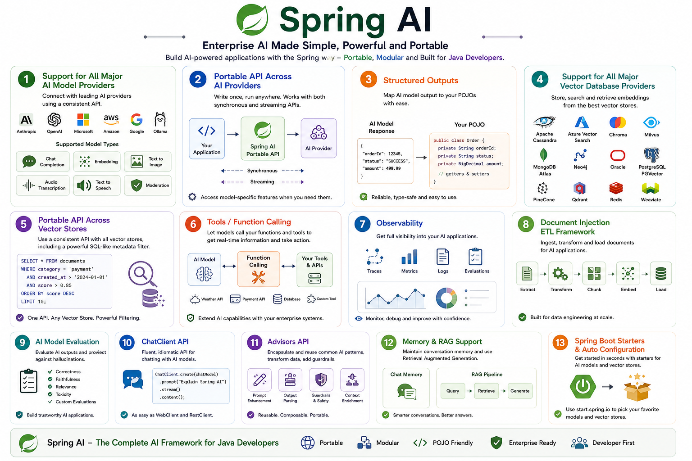

Spring ai
Explore Spring AI
Spring AI is a framework that helps you build AI-powered applications using Java/Kotlin/Embabel and Spring principles.
For example, you can use it to build applications that:
- Chat with an LLM
- Generate text
- Create embeddings
- Search documents using Vector databases
- Build RAG applications
- Connect AI models to your business logic
Spring has always focused on principles like:
- Dependency Injection → components are loosely coupled
- Modularity → break an application into manageable components
- POJOs → use simple Java classes rather than complicated framework-specific classes
- Portability → avoid being locked into one technology
Spring AI brings these same ideas into AI development/engineering.

Dependency Injection
Dependency Injection is an important design principle. In the context of Spring AI, you can understand it like this:
Instead of creating AI components yourself:
Spring can provide the required components to your class:@Service
public class PaymentService {
private final ChatModel chatModel;
public PaymentService(ChatModel chatModel) {
this.chatModel = chatModel;
}
}
Here:
Your PaymentService doesn't need to know how the ChatModel was created.
Why is this useful for AI?
Suppose your application uses an Amazon Bedrock model today:
Later, you could configure another supported model/provider like Gemini, Ollama, Mistral or OpenAI.
The business logic can continue working with the ChatModel abstraction rather than being tightly coupled to the provider
That's where Dependency Injection + Portability work nicely together
Modularity Design
Achieving modularity by separating the application into different components instead of putting everything into one huge AI application.
We can create separate components such as:
AI Application - Chat Model - Embedding Model - Vector Store - Prompt Management - RAG - Tools
Each part has a specific responsibility, and this makes the application easier to:
- Develop
- Test
- Replace Components
- Maintain
Portability
When it comes to portability, for example, you might be using Amazon Bedrock today, but tomorrow, if you want to switch to another model provider, your application code doesn’t need to be completely rewritten.
Your Application → Spring AI → Amazon Bedrock
Your Application → Spring AI → OpenAI/Google ADK/Mistral/Ollama
So, Spring AI tries to keep your application code independent of the particular AI Model Provider.
Using Plain Old Java Object (POJO's) as the building blocks
In simple terms:
Use normal Java classes to represent your application data and logic:
For example:
Spring's philosophy is that your business logic should not have depended heavily on the framework. Spring AI follows the same idea.
How the four principles fit together
You can remember the Spring AI philosophy like this:
| Principle | Simple meaning |
|---|---|
| Portability | Don't tightly depend on one AI provider |
| Modular Design | Break AI functionality into reusable components |
| POJOs | Use simple Java objects for application data and logic |
| Dependency Injection | Let Spring provide the components your application needs |
Spring AI Application
│
┌──────────────┼──────────────┐
│ │ │
Portability Modular Design POJOs
│ │ │
Switch AI model Separate parts Simple Java
│ │ │
└──────────────┼──────────────┘
│
Dependency Injection
│
Spring provides components
│
▼
Your Application
In a nutshell,
Spring AI brings the familiar Spring way of developing applications into the AI world. It allows Java/Kotlin developers to build AI applications using modular components, simple Java/Kotlin objects, and APIs that make it easier to switch between different AI providers and technologies.
Spring AI helps your application connect your company's data and business APIs with AI models
Let's break it down
Imagine you have a Payment Service in your application
You have three important things:
- Enterprise Data: Customer data, Transaction data, Product data
- Enterprise APIs: Payment API, Order API, Account API
- AI Models: Amazon Bedrock, Azure OpenAPI, Google Gemini, OpenAI, etc.,
How do we glue these and make it three work together?
1. Enterprise Data
Your company already has a lot of data:
- Customer Information
- Payment transactions
- Orders
- Product Information
- Documents
- Database records
Spring AI can help your AI application access and use this data
For example:
Database → Spring AI → AI Model
The AI model can then answer questions based on your company's data.
2. Enterprise APIs
Your company also has APIs that perform business operations.
For example:
An AI application may need to call these APIs.
For example, a user asks:
"What is the status of my payment"?
The flow could be
User → AI Application → Payment API → Payment Service → Payment Data
Spring AI helps you build this kind of integration between the AI application and your existing APIs.
3. AI Models
Then you have AI models such as:
Spring AI provides abstractions that make it easier for your application to work with different AI models
So your application can have:
Spring AI
│
┌──────────────┼──────────────┐
↓ ↓ ↓
Enterprise Enterprise AI Models
Data APIs
│ │ │
Database Payment API OpenAI
Documents Order API Bedrock
Customer Data Customer API Azure
The key idea
Think of Spring AI as the bridge
Enterprise data → Spring AI (Bridge) → AI Models → Enterprise APIs
Spring AI Features

- Broad AI Provider Support: Connects with leading AI ecosystems (OpenAI, Anthropic, Google, Amazon, Microsoft, Ollama) using consistent, portable APIs for both instant and streaming responses, while keeping access to provider-specific settings.
- Comprehensive Model Capabilities: Handles a wide array of AI tasks, including text chat, text embeddings, image generation, audio transcription, text-to-speech, content moderation, and structured output (mapping AI responses directly to Java POJOs).
- Vector Database & RAG Integration: Integrates with all major vector databases (e.g., Pinecone, PostgreSQL/PGVector, Redis, MongoDB Atlas, Chroma) featuring a unified metadata filtering API, conversation memory, and RAG (Retrieval Augmented Generation) support.
- Extensible Tool & Data Pipelines: Includes client-side function/tool calling for real-time data lookup, as well as a dedicated document ETL (Extract, Transform, Load) framework for data engineering.
- Enterprise-Grade Utilities: Built-in observability tools to monitor AI operations, alongside evaluation utilities to detect hallucinations and ensure output quality.
- Spring Framework Idioms: Features a fluent ChatClient API (similar to WebClient/RestClient), an Advisors API for common Generative AI patterns, and Spring Boot auto-configuration/starters available via start.spring.io.
To start with understand some AI concepts here: